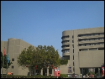
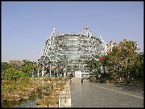
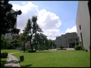

Taichung is a city located in west-central Taiwan, making it the third largest city of the island, after Taipei and Kaohsiung. The city has several pleasant tea and restaurant locations, an excellent science museum and a very good art museum. Additionally, Taichung is also home to some of the highest mountains in Taiwan, as Xue Shan (Snow Mountain), the third highest mountain in Taiwan standing at over 3750m. It is a fantastic mountain to climb, taking two days to go up and down from the road, moving through tropical rain forest, pine, bamboo, grass to snow and rock at the top. To know more about Taichung, please visit http://english.tccg.gov.tw/leisure.php
National Museum of Natural Science (台中科學博物館)
One Guancian Road Taichung, Taiwan 404
  
Directions to the conference venue
High Speed Rail
From the HSR Taichung Station, take the free shuttle bus to the SOGO Department store (National Museum of Natural Science) stop.
Train/Bus
From the Taichung Railway Station, transfer to one of
the following buses:
Taichung Transit No. 27, 35, 70, 71, 88, 103, 106, 146, 147
Jenyou Transit No. 22, 37, 45, 48, 72, 125
U-Bus No. 77, 83
any JyuYe Bus heading toward Shalu or Dajia
Car
From the Chung Shan Highway (National Freeway 1), exit at Taichung Gang Rd. toward Taichung and continue along Taichung Gang Rd; or from the Taichung-Changhua (Zhongzhang) Expressway, exit at WuQuan W. Rd. and turn left onto WenXin Rd., and then right onto Taichung Gang Rd. to reach the museum.
Coach
For groups traveling by coach, there are two coach drop-off points outside the Situn Rd. and Boguan Rd. entrances. In addition to 32 parking spaces for coaches, we also have a conditioned lounge for coach drivers to take a rest.